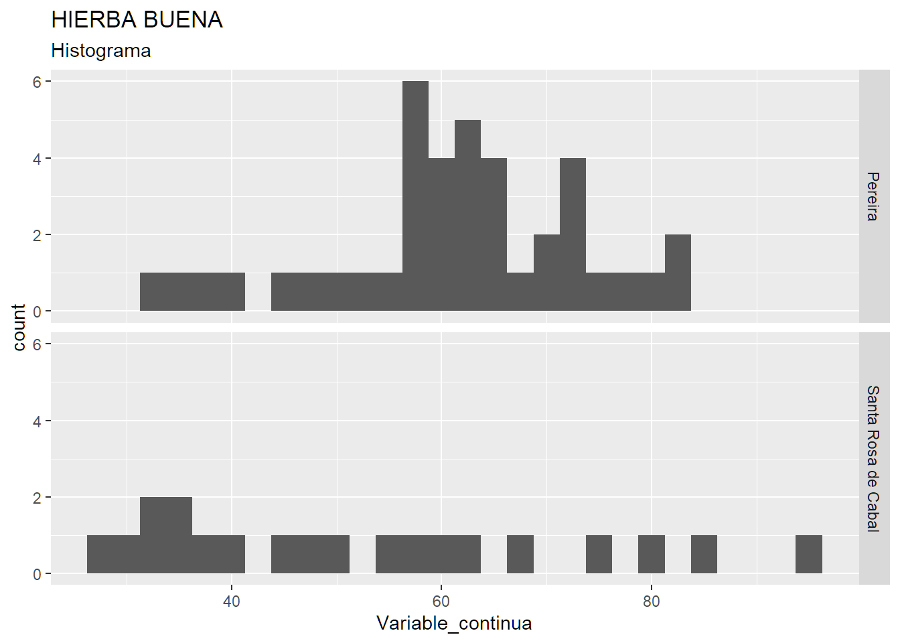

knitr::opts_chunk$set(echo = TRUE,
warning = FALSE,
message = FALSE)
#install.packages("readxl")
#install.packages("tidyverse")
#install.packages("knitr")
#install.packages("kableExtra")
#install.packages("ggpubr")
#install.packages("dplyr")
#install.packages("DescTools")
library(readxl)
library(tidyverse)
library(knitr)
library(kableExtra)
library(ggplot2)
library(DescTools)
library(janitor)
## Se recomienda ubicar aqui la lectura de los archivos y las librerias en este chunk.
## It is recomended to put here the code to read the files and the libraries in this chunk.
## VoÇe pode escrever a leitura dos arquivos e as livrarias nesse chunk.
# Configurar la dirección de lectura de archivos.
# Set the WORKING DIRECTORY
#setwd("C:/Users/Julian/Documents/R/ANALISIS DE VAR CONTINUAS")
#data <- read_xlsx("AROMATICAS (Para desarrollar).xlsx")
data <- read.csv("https://docs.google.com/spreadsheets/d/e/2PACX-1vT_gIgjfKwvUOPAbK4kAa7rpRHFbQqm1wNoLAHhT4fJEZNLonTuysf3pYhU1MpEKg/pub?output=csv", dec = ",")
# Mirar la línea 87 para cambiar los nombres de las variables.
#Nota:En los siguientes enlaces, encuentra información sobre gráficos mejorados para analizar datos, principalmente relacionados con variables continuas.
# https://github.com/z3tt/beyond-bar-and-box-plots/blob/main/README.md?s=03
#https://www.cedricscherer.com/slides/USGS-2021-beyond-bar-and-box-plots.pdf9 Apendice
9.1 Análisis de variables continuas - Estadistica (Ejemplos de gráficos con ggplot)
9.2 TABLA RESUMEN
En estas líneas puede escribir tu análisis.
#Ejemplo para interpretar boxplot
#https://rpubs.com/angiescetta/ejemplo-boxplot
data_limpia <- data %>%
clean_names() %>%
rename(Variable_continua=velocidad,
Categoria=ciudad)
glimpse(data_limpia)Rows: 60
Columns: 7
$ marca_temporal <chr> "10/5/21 21:12", "10/5/21 21:14", "10/5/21 21:14", "…
$ Categoria <chr> "Pereira", "Pereira", "Pereira", "Pereira", "Pereira…
$ lugar <chr> "Viaducto", "Viaducto", "Viaducto", "Viaducto", "Via…
$ distancia_metros <int> 300, 300, 300, 300, 300, 300, 100, 100, 100, 300, 30…
$ tiempo <dbl> 16.73, 17.32, 15.01, 19.94, 14.69, 18.45, 7.73, 4.37…
$ velocidad_km_h <dbl> 64.55469, 62.35566, 71.95203, 54.16249, 73.51940, 58…
$ Variable_continua <dbl> 64.6, 62.4, 72.0, 54.2, 73.5, 58.5, 46.6, 82.4, 68.8…summary(data_limpia) marca_temporal Categoria lugar distancia_metros
Length:60 Length:60 Length:60 Min. :100
Class :character Class :character Class :character 1st Qu.:100
Mode :character Mode :character Mode :character Median :200
Mean :200
3rd Qu.:300
Max. :300
tiempo velocidad_km_h Variable_continua
Min. : 4.370 Min. :28.64 Min. :28.60
1st Qu.: 7.022 1st Qu.:47.40 1st Qu.:47.42
Median :12.470 Median :59.93 Median :59.95
Mean :12.450 Mean :58.00 Mean :58.26
3rd Qu.:17.148 3rd Qu.:68.32 3rd Qu.:68.65
Max. :30.410 Max. :93.99 Max. :94.00 data_limpia %>% group_by(Categoria) %>%
summarise(count = n(),
mode = Mode(Variable_continua),
mean_media = round(mean(Variable_continua, na.rm = TRUE), digits = 2),
min = min(Variable_continua),max = max(Variable_continua),
range = max - min,
Q1 = quantile(Variable_continua, 0.25),
median_mediana = median(Variable_continua, na.rm = TRUE),
Q3 = quantile(Variable_continua, 0.75),
IRC = Q3 - Q1,
var = round(var(Variable_continua),digits = 2),
sd = round(sd(Variable_continua, na.rm = TRUE), digits = 2),
vc = round(sd(Variable_continua, na.rm = TRUE) / mean(Variable_continua, na.rm = TRUE),digits = 3),
P1 = round((mean(Variable_continua, na.rm = TRUE) - mode)/sd(Variable_continua, na.rm = TRUE),digits = 3),
P2 = round((3*(mean(Variable_continua, na.rm = TRUE) - median_mediana))/sd(Variable_continua, na.rm = TRUE),digits=3)) %>%
kbl(caption = "Medidas de tendencia central y dispersion",
align = "lccrr") %>%
kable_classic(full_width = F, html_font = "Cambria")| Categoria | count | mode | mean_media | min | max | range | Q1 | median_mediana | Q3 | IRC | var | sd | vc | P1 | P2 |
|---|---|---|---|---|---|---|---|---|---|---|---|---|---|---|---|
| Pereira | 40 | 71.9 | 61.21 | 33.1 | 82.4 | 49.3 | 56.525 | 61.95 | 69.375 | 12.85 | 145.01 | 12.04 | 0.197 | -0.888 | -0.184 |
| Santa Rosa de Cabal | 20 | NA | 52.35 | 28.6 | 94.0 | 65.4 | 35.550 | 48.45 | 64.450 | 28.90 | 394.49 | 19.86 | 0.379 | NA | 0.590 |
9.3 GRÁFICO DE CAJAS - BOX PLOT
# En este y los demas "chunks" que cree ubicara el codigo para procesar los datos y generar las tablas y graficos.
#Nota:En los siguientes enlaces, encuentra información sobre gráficos mejorados para analizar datos, principalmente relacionados con variables continuas.
# https://github.com/z3tt/beyond-bar-and-box-plots/blob/main/README.md?s=03
#https://www.cedricscherer.com/slides/USGS-2021-beyond-bar-and-box-plots.pdf
## La siguiente forma de realizar el BOXPLOT permite filtrar los datos más facil, está escrito en modo de sintaxis TYDIVERSE y facilita la manipulación del gráfico.
data_limpia %>%
ggplot(aes(y= Variable_continua , x= Categoria))+
geom_boxplot()+
labs(title = "Gráfico de cajas para la variable continua de acuerdo a la categoria",
caption = "El diamante negro representa la ubicación de la media")9.4 GRÁFICOS DE DENSIDAD
En estas líneas puede escribir sus análisis.
# En este y los demas "chunks" que cree ubicara el codigo para procesar los datos y generar las tablas y graficos.
data_limpia %>%
ggplot(aes(x= Variable_continua))+
geom_density() +
labs(title = "Gráfico de densidad",
subtitle = "Por categorias") +
facet_grid(Categoria ~. )#Estas lineas sirven para crear el gráfico de densidad para una categoria individual
#data %>%
# filter(Categoria == "MENTA") %>%
# ggplot(aes(x= Variable_continua))+
# geom_density()+
# labs(title = "MENTA",
# subtitle = "Gráfico de densidad")9.5 HISTOGRAMAS
En estas líneas puede escribir sus análisis.
#Estas lineas sirven para crear el histograma para una categoria individual
#Con el binwidth se puede ajustar el ancho de las barras, puede explorar
# un poco con los anchos, aunque.
# La ley de STURGES permite calcular el número de clases y así el ancho de clase adecuado para #gráficar un histograma de manera técnica.
data_limpia %>%
ggplot(aes(x= Variable_continua))+
geom_histogram(binwidth = 2.5)+
labs(title = "HIERBA BUENA",
subtitle = "Histograma")+
facet_grid(Categoria ~. )
#Estas lineas sirven para crear el histograma para una categoria individual
# data %>%
# filter(Categoria == "MENTA") %>%
# ggplot(aes(x= Variable_continua))+
# geom_histogram(binwidth = 1)+
# labs(title = "MENTA",
# subtitle = "Histograma")9.6 HISTOGRAMAS Y GRÁFICOS DE DENSIDAD.
En estas líneas puede escribir sus análisis.
data_limpia %>%
ggplot(aes(x= Variable_continua, y= ..density..))+
geom_histogram(binwidth = 2)+
geom_density()+
facet_grid(Categoria ~. )Warning: The dot-dot notation (`..density..`) was deprecated in ggplot2 3.4.0.
ℹ Please use `after_stat(density)` instead.#Estas lineas sirven para crear el histograma para una categoria individual
#Con el binwidth se puede ajustar el ancho de las barras, puede explorar
# un poco con los anchos, aunque.
# La ley de STURGES permite calcular el número de clases y así el ancho de clase adecuado para #gráficar un histograma de manera técnica.
#data %>%
#filter(Categoria == "MENTA") %>%
#ggplot(aes(x= Variable_continua, y= ..density..))+
#geom_histogram(binwidth = 1.5)+
#geom_density()